Week 2
Day 6
Using a Vinyl Cutter
The week 2 starts with the machines. We plan to learn each machine each day. So before that some arrangements is to be done. We have to keep all the things (not the machines , but the consumables , tools, etc...) categorized. So it was the first job. We spent some time for that.
After that we started with the Vinyl Cutter (Model: Roland CAMM-1 Servo vinyl cutter). Simply a vinyl cutter is a machine which cut thin sheets like vinyl through the vector path given by the computer or any processor. It has many applications but we see it is usually used for cutting stickers.

Here we use Fab modules to drive the cutter , which takes .png file as input. As i told before, the machine cut through the vector path. SO the fab modules convert the .png file to the vector file(.svg). So for cutting a sticker , we design a the sticker in gimp or photoshop, export as .png, import it to fab module, make the vector file and give "cut". One thing we have to remember is the .png design should be in black and white (with only two states). I explain below what i did.

Design the .png file
I downloaded a pic from the internet. Opened it in the gimp. It was already in black and white but i confiremd it by doing the following
Image -> Mode -> indexed
Gave the maximum number of colors to 2
Then i exported as .png

Using the fab modules
I opened the terminal and typed 'fab'. Select the input file as .png and the output process as the Roland CAMM1-Servo (.camm).
Use the "load png button" to load the png file. Resized it to 50x50 mm by clicking the "Resize" button. Click the "Make path" to creat the path and then hit make .camm

Setting up the machine
First thing to do is loading the vinyl roll. For that ther is lever in the backside of the machine which is to be pulled upwards. I did it.
See the lever

I loaded the roll. while doing it we need to make ensure some things. There are some rollers in the machines which controll the move ment of vinyl in the y axis. The rollers should be on the white portions which is marked on the machines.

We can adjust the rollers over the white marks so that the the two rollers are at the edges of the vinyl roll in the x axis. Once we load the vinyl push down the liver (the same lever we pulled down to load the vinyl)
We can use not only the vinyl roll but also a piece of vinyl, and what i used is a piece. Once we load the piece of vinyl we should select the "Scan" option in the machine and hit enter. Then it wiill show us the size of the piece that can bu used. So make sure that our design size not beyound this size
So after setting up the machine parts, hit "send it" in the fab module window, and the machine will start cutting.
Next is to take the sticker and place it where we want. This is some what tricky and need some skill. Here i used a masking tap to take the sticker (which is cut)

And finally...., done!

Also see another sticker (my name ) that i designed and pasted on my HDD purse.

Day 7
PCB Milling and Making of Fab ISP
Modella MDX 20
Today we started with the machine, Rolland Modella MDX 20, which is pcb miller. This is a 2.5D mcahine which can also be used for milling wax with limited depth (Z axis). The first session was to make a FAB isp whose design is already made and available at http://fab.cba.mit.edu/content/projects/fabisp So i explain below the steps i followed
The main steps to mill a pcb are desiging the circuit (export as .png format), using fab modules to controll the machine, setting the machine and milling.
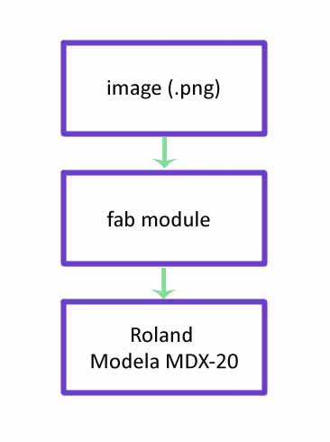
This is the first part, the design. If you are using the fab modules , the the design should be in .png format. We took the design from http://fab.cba.mit.edu/content/projects/fabisp which is already done using the Eagle software. The schematic file is in eagle is also available in the site.

What happens when milling a pcb is, removing the unwanted coper parts in the coper board , keeping the traces where the components are to be placed. So in the picture above the white color is the traces and the black is the portions to be removed. The fab modules reads the png file and detect the postions of the black color and commands the machine to mill that position. Once you mill the board it should be cut from the parent coper board. So we need another png file for this operation. That png file contains only the outline of the board.

This is the cut out file
Using fab module is same as we did for the vinyl cutter. Open the terminal and type "fab"
A window will pop up. Select the following
input format : Image(.png)
output process : Rolland MDX20
Now click "make_png_rml"
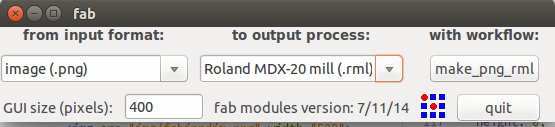
All these steps are same like the vinyl cutter because we use same fab module for that process also.
Now another window will come. Load the image (our design which is in the png format). Then click on make path button. Choose the process as "mill traces(1/64)" on the top of the window. And the final step is to click on "make .rml" button and then on "send it!" button
Before clicking the "make .rml" we need to set up the machine.
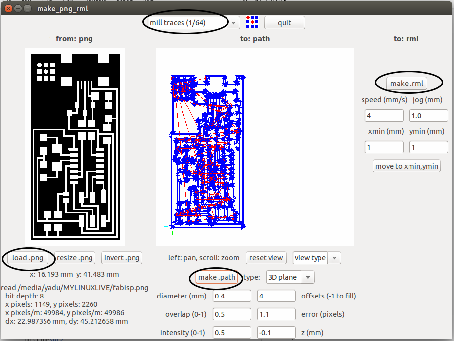
Now we have to set up the machine, like selecting bits, placing coper board, setting the origin etc.
Here we use two types of bitts
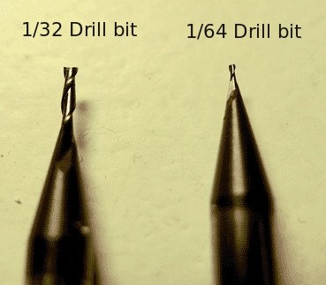
Here we use the 1/64 bit. For mounting the bit on the head, there is a screw that is to be loosen first. We can use allen key to loosen it. Then place the bit such that the majority of the bit goes inside the head. Then tighten the screw using the allen key
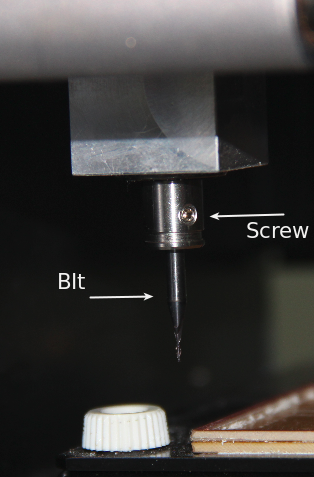
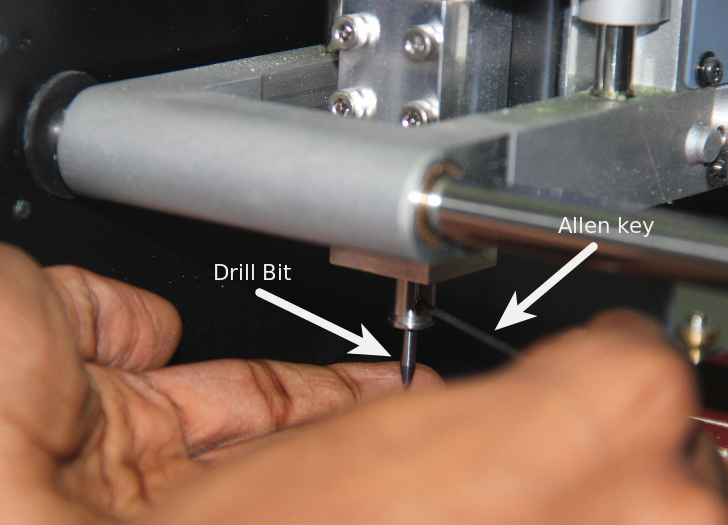
Next is placing the board. There is grid marked on the machine so that we can understand the position. The default origin of the machine is at left bottom. It is better to place the copper board at the left bottom side. Double sided tap can be used to fix the copper board.
Next we want to set the origin. The Bit tip should be at the origin point with respect to the copper board. So we have to move the bit tip to the point where we want to set it as the origin. For that we can use the "X min" and "Y min" options in the fab module. Giving x and y values and clicking on "go to x min y min" the tip will go to positions. We can move the tip to the correct position using trial and error method.
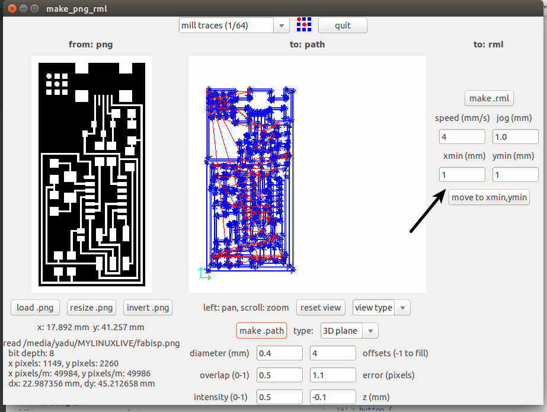
Once we set the x and y axes, next is to set the Z axis. The Z axis is to be set such that the tip of the bit just touches the copper board. For that there are two buttons - UP and DOWN- on the machine which will move the bit to up and down.
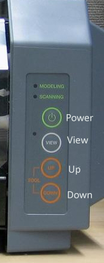
Once we set all the axes, then click on "make .rml" and then on " Send it". NOw the machine will start milling
For cutting the board , we have to do all these procedures once more with the cut out image and the 1/32 bit.
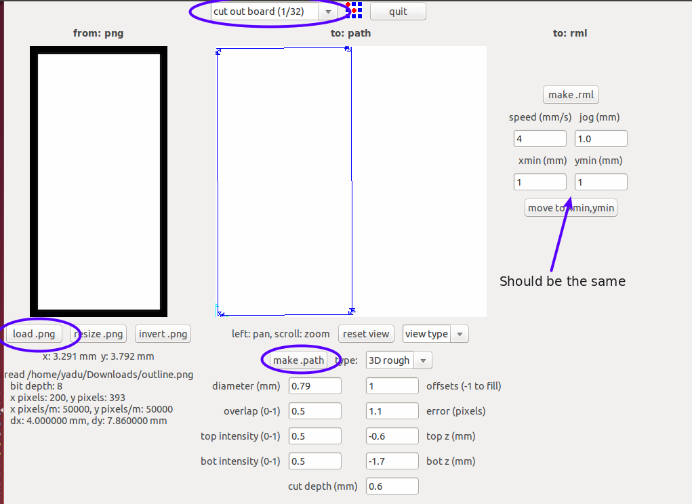
Soldering the components
Now the pcb is ready and the next is soldering the components. For soldering, we use soldering station of Weller which is very nice to use.
I wrote down all the components required in a paper.I started soldering the components according to the circuit diagram.

Finally the hardware part of the ISP is ready.
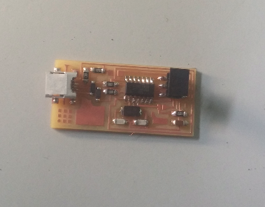
Next is to program the ISP. So we need a programmer.
For programming a programmer ,we need another programmer :P
Up to this part, everything was smooth. But we faced some trouble while programming. I downloaded the hex file and make file from the http://fab.cba.mit.edu/content/projects/fabisp. When i plugged the isp programmer which is already here in the fablab, the computer detected it as an isp programmer. But when we tried programming , it is shown that" No programmer found". Me and Luciano tried all the way but still the same error. The root cause was we don't know the the exact name and model of the programmer.It was written nowhere on the programmer. Since we were so busy to troubleshoot the problem i forgot to take any screenshot or snap of that error message.
Suddenly i remembered about my asp programmer, i have been using for some years to program atmel chips. It was in my bag itself!!! Thanks god! It is a usbasp type programmer. I took it , plugged to the computer. When i tried to connect it to the Fab isp, ooopz still problem! The connector pin we used in the fabisp is 6 pin, and the connector pin on my programmer is 10 pin type! But no problem, Luciano made some arrangements using some jumber wires and pins which helped us to connect my programmer with the fabisp. And finally it is done. We programmed the fab isp that I made with my progrmmer. After programming I removed the jumber fire which is to be removed from the isp after programming it. Finally the Fab ISP is ready
Making Wax Mould
This machine (Rolland MDX20) can also be used for milling wax and hence making moulds in wax. The evening session was about that. Luciano made a small 3d model in Rhino and exported as .stl format. Since i have explained about using fab modules for this machine i am not repeating again. Here all the procedures are same. The bit used is 1/8 inch diameter drill bit , which is commonly used for drilling wax.
Here is the model designed by Luciano
We opened fab modules. selected input as .stl format and output process as rolland MDX20. Loaded the .stl file. Made path. Set the origin and finally started drilling.
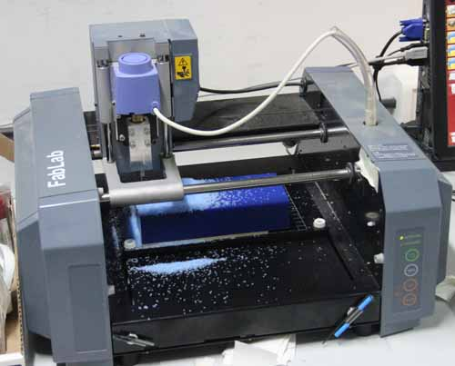
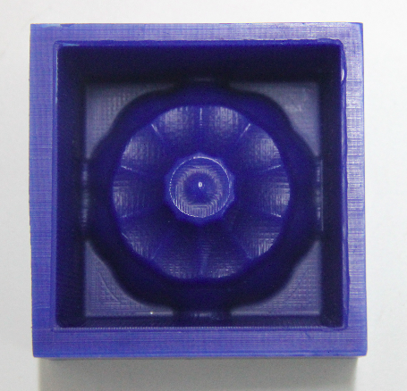
Day 8
Moulding
We made the wax mould yesterday using modella.What we made yesterday is the shape of the original product. In other words it is the mould for making moulds for the final product. Today we are making the mould for the final product. We want to types of final products(two tpyes of materials), they are Plastic and Babbit (Antimony alloy). So for different materials different moulds should be made. Mould for plastic can't be used for casting metals because it may melt.
This is the wax mould we used, note that the shape inside the wax mould is the shape of the final mould.
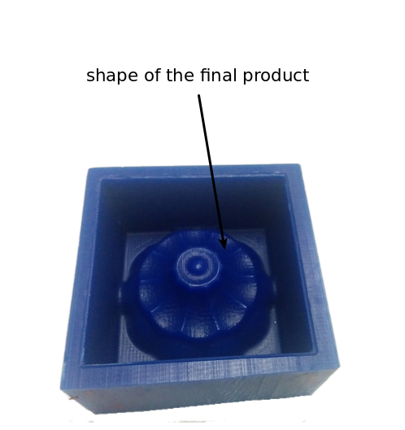
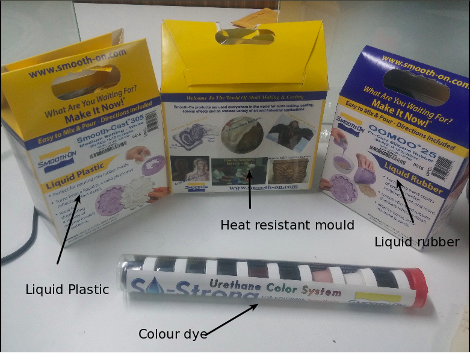
Making the mould for plastic product
For making plastic type products, we use the liquid rubber mould. Here we use OOMOO 25. The two solutions are mixed in the ratio specified. To make things easy we calculated on the basis of weight. Since ther is a weighing machine it is easy to calculate on the basis of weight. After mixing, it is poured in to the wax mould. The setting time is around 3 hours. So we kept it there for 3 hours.
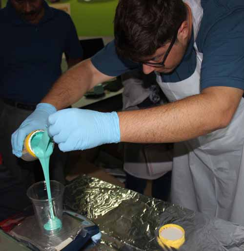
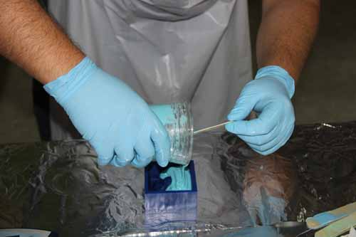
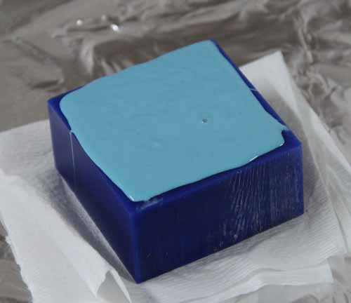
Now the rubber mould is ready.
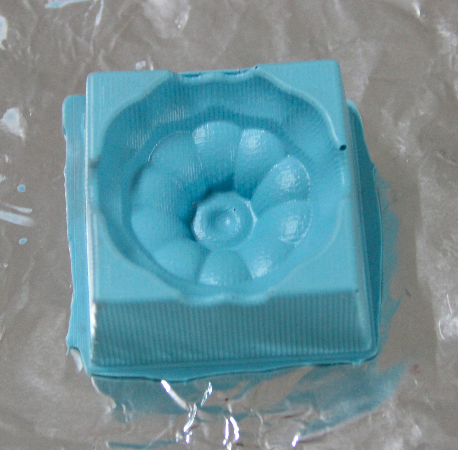
Next thing is to make the final product with the rubber mould. Rubber mould is for making plastic products. Here we use the Smooth Cast-305 Liquid Plastic to make our plastic prodcut. We mixed the solutions in the specified ratio as before. Added the color dye for giving required color to the product.Then poured the whole thing in to the rubber mould. And kept it there for setting.
The final plastic product is:
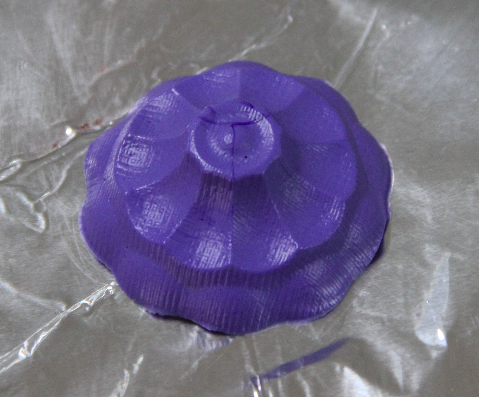
But for making metal products, we need another mould with heat resistant material. So for that, we made another mould using the same wax mould. The procedures are same. But the solution used is high temperature silicon. We mixed the solution, and poured to the wax mould.
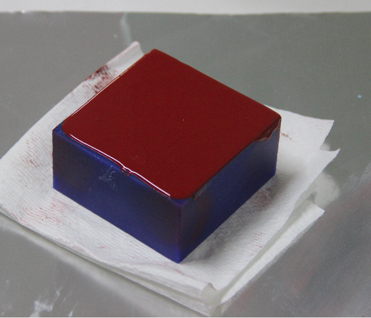
Its setting time is about 24 hours, so we kept it there. Will take it tomorrow and will make the metal product using this mould tommorow.
Day 9
3D Printing
The main steps for 3D printing are below
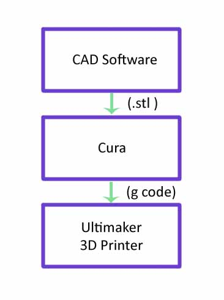
Luciano asked us to design something that can't be made using subtractive method. I opened rhino. I made a small design , a cup. Next step is to print it using 3d printer.
Here is the design i made:
CUP by yadusharon on Sketchfab
What i exported from rhino is in .stl format. For printing, 3D printer needs it as g-code. So we use another tool called Cura. I imported the .stl file in to cura. Placed it in the correct positions and gave the filling percentage as 20%. Since it is a small cup 20% is enough.
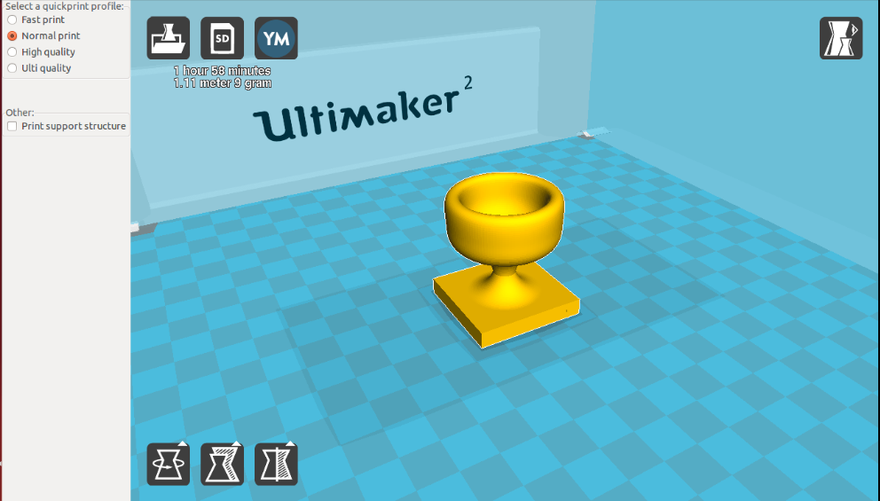
Then i saved it in to the SD card and inserted in the 3D printer. The printer we are using is Ultimaker.There is a small display and a rotary switch on the printer. Using that we can find our file from SD card and we can give print.
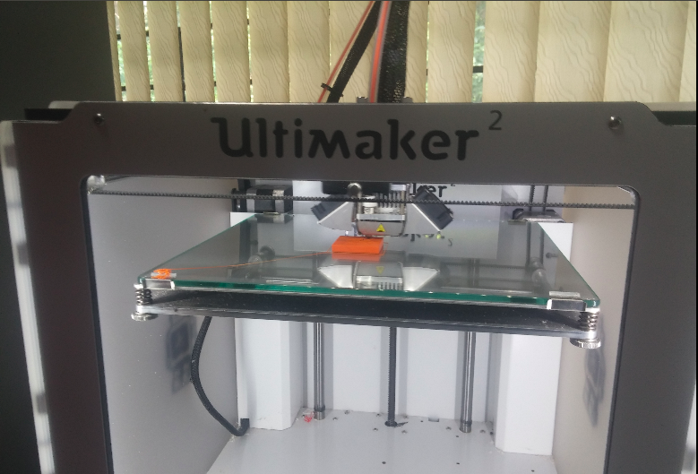
The final CUP
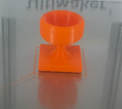
Day 10
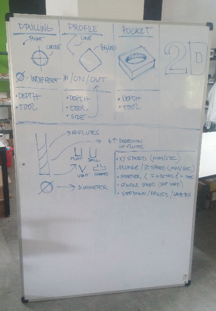
For drilling, it is all aobut the depth and the tool. That means which bit is we using (it determines the diameter of the hole ) and up to what depth we are drilling. Only two factors. If it is a profile -cut along a path or curve- then there three things which are to be taken in to account. The tool, the depth and the side. Side means whether the bit should go along the curve, or inside the curve or outside the curve. Suppose we want to cut a disc with 10cm diameter. If we want it exact 10cm , then the bit should run outside of the circle otherwise the diameter of disc will be less than the designed by diameter of bit. For a pocket there are only two things like a drill, depth and tool.
When we come to bits, there are several things. The flutes (Number of flutes will varry), the diameter, and the shape(whether it is v shaped, or flat, or ball typed etc). it is clear from thr picture above (which is actually drawn by Luciano)
As i told before, for cutting a wood or something the first thing we need is design. Luciano has designed a pocket and a profile. So we have the design. Since we are doing this experement together (not individually) i couldn't take screenshot of any. I was busy with litsening Luciano, and we should be much carefull than using any other machine. The design should be in .dxf format. So next step is to make the path file using Vcarve tool. I thhink We dont have fab modules for shopbot rightnow,we are using windows OS anyway. In Vcarve there is option for slecting bits, giving depth , selecting profile, drill, pockets etc. Once you set up everything we can save the path as a file.
Next is to open shopbot software. Using the shopbot software, we can move the machine head manually. We have to set the origin in X,Y and Z axes. The longest axes is the X and other is the Y of shopbot. Then we load the path file we saved from Vcarve. There is a green button to start shopbot, press it. And give start in the shopbot software. Then it will start cutting.See the pocket:
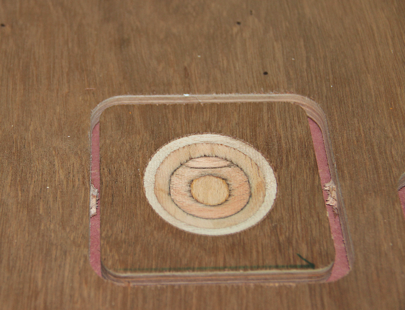